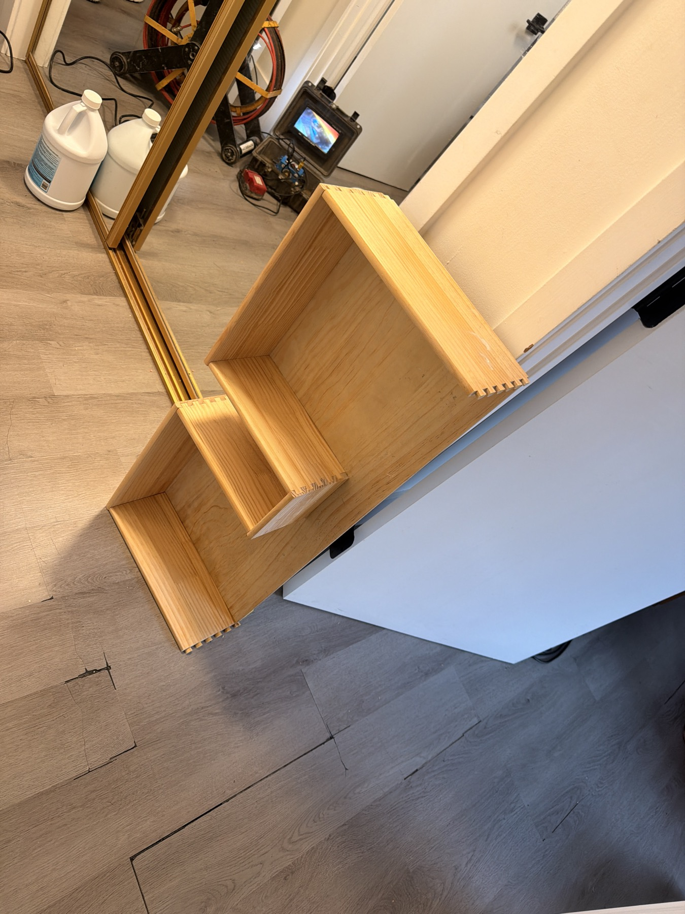
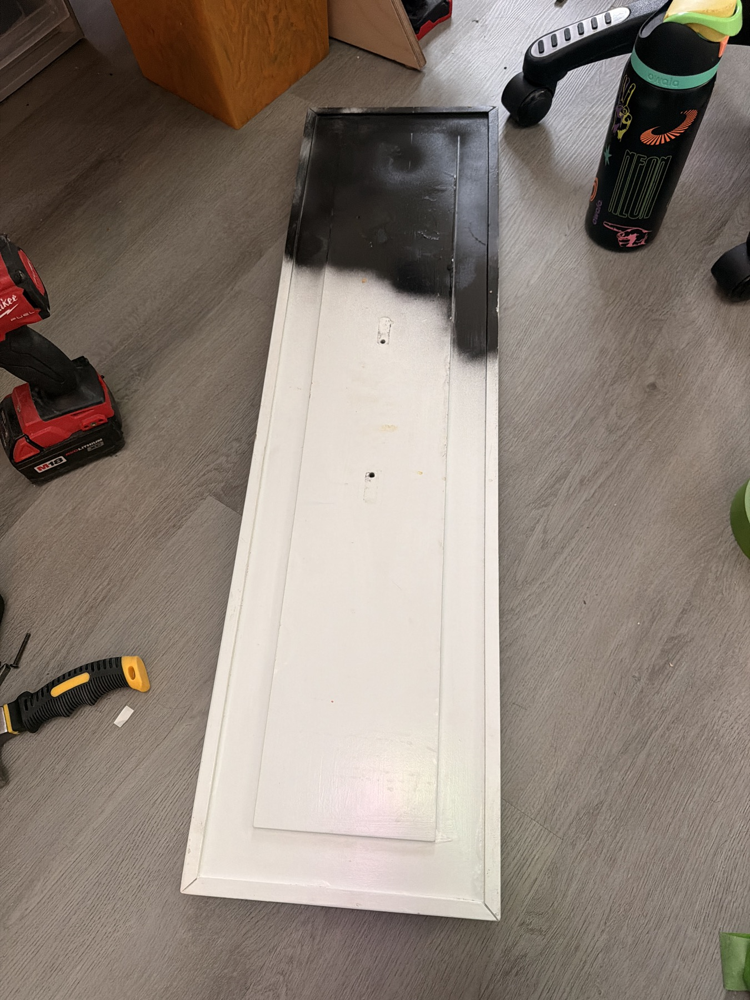
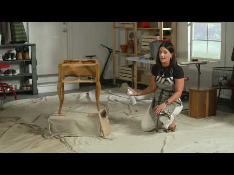
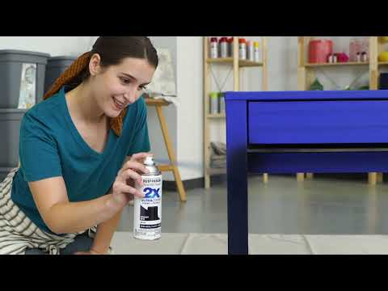
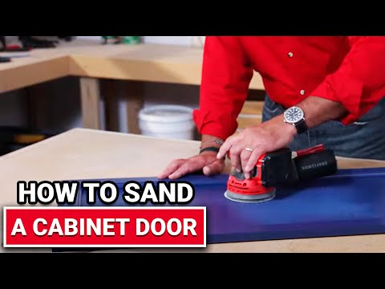
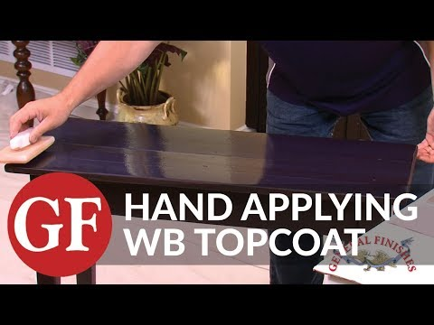
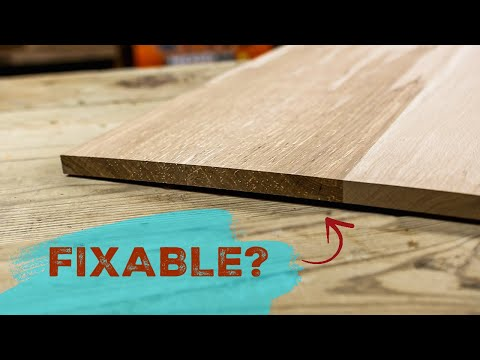

Inspect before sanding
If the furniture or coating could date before 1978, test for lead before disturbing it. Remove hardware and label every part.
The table gets a durable Whisper White finish. The bathroom cabinet stays natural, but its existing warp must be stabilized before any clear coat locks in the moisture imbalance.

You already own Rust-Oleum 2X colored spray paint, Minwax Dark Walnut stain, 120/220 paper and 99% isopropyl alcohol. The stain and alcohol are not part of this job.
Clean, repair, scuff, prime, then apply two thin coats of exact color-matched cabinet/furniture enamel. For a large flat surface, a 4-inch cabinet roller will look more even than aerosol cans.
First stabilize and assess the warp. Then sand carefully and apply three coats of clear, non-yellowing water-based topcoat. No Dark Walnut stain. No colored Rust-Oleum.

If the furniture or coating could date before 1978, test for lead before disturbing it. Remove hardware and label every part.
Use mild dish soap/water or TSP substitute, then a clean damp wipe. Let dry fully. Do not wipe the painted surface with 99% alcohol; it can soften or smear an unknown finish.
Fill chips/dents. Use 120 only on pronounced paint ridges or repairs. Scuff the full surface with 180; hand-sand corners and edges. Do not grind to bare wood.
HEPA vacuum with brush attachment, then wipe with a barely damp microfiber cloth. Let dry. Dust left behind becomes permanent texture.
Use a bonding/stain-blocking primer, especially over black areas and raw repairs. Apply with a 4-inch cabinet roller and 2-inch angled synthetic brush. Dry per label, then lightly sand 220.
Have the paint chip matched in satin cabinet/door/trim enamel. The Rust-Oleum Heirloom White can is not the same color unless you intentionally accept that change. Apply two thin coats; do not overwork paint after it begins to tack.
Respect the product’s recoat time. Handle gently after 24–48 hours and avoid clamping, stacking or hard use until fully cured—often 5–7 days.
Use outdoors/open garage at 50–90°F and below 65% humidity. Rust-Oleum’s satin TDS says 10–16 inches away, two or more light overlapping coats, and recoat within 1 hour or after 48 hours. Bare wood benefits from dedicated primer. One 12 oz can covers roughly 8–12 sq ft at recommended film thickness; a large tabletop may take several cans and show striping.
The wood has already warped. Finish slows future moisture exchange; it does not reverse deformation. Stabilize first, and do not sand the cabinet “flat” by removing a lot of wood.
Place each piece on a known-flat surface. Photograph it edge-on. Mark whether it is bow, cup, twist or swollen panel. Check whether drawers still fit and slide.
Keep pieces indoors near the bathroom’s normal climate, separated with spacers so air reaches both faces, for at least 48–72 hours. Do not stack them flat against each other. A moisture meter is useful; compare pieces rather than chasing one magic number.
Slight solid-wood bow that does not affect fit may be usable. A warped thin drawer bottom or swollen/crumbly engineered panel is usually better replaced. Severe twist, broken joints or non-closing drawers need a carpenter/cabinet shop before finish.
Use mild soap/water only where needed and dry completely. Sand with the grain: 180 then 220. Hand-sand dovetails, corners, veneer and edges. Do not use the random-orbit sander on small rails, dovetails or thin veneer.
Use Minwax Polycrylic Clear Satin/Matte or General Finishes High Performance Satin/Dead Flat. Both are water-based and stay clearer than oil polyurethane. Test an underside area for color and adhesion first.
General Finishes specifies 2–3 coats and says more than 3 does not improve durability. Minwax specifies 3 coats and a 2-hour recoat under its stated conditions. Stir—never shake. Brush with the grain using a quality synthetic brush/foam applicator; lightly sand 220–320 between coats after drying.
Coat fronts, backs, sides, edges and end grain so moisture resistance is balanced. Mask wooden drawer-slide contact surfaces and tight joinery where added film would affect fit. Keep bathroom ventilation running and wipe standing water promptly.
Do not reinstall into a steamy bathroom just because the finish feels dry. Follow the selected can’s full-cure instructions; give it several days of dry, ventilated cure time.
Minwax Dark Walnut and 99% alcohol are not needed. Your black, Smokey Beige and Heirloom White Rust-Oleum cans are useful only where you deliberately want those opaque colors—not on the natural cabinet, and not as an exact Whisper White match.
These are real manufacturer/retailer tutorials plus one woodworking warp demonstration. YouTube requires internet; the PDF includes clickable thumbnails.

Rust-Oleum · Open video

Rust-Oleum · Open video

Ace Hardware · Open video

General Finishes · Open video

Sturdy Bones Woodworking · Use to understand cup/warp mechanics; your assembled dovetailed cabinet may require a different repair. Open video
The label on the exact product you buy controls over this guide. Existing material, coating and warp severity cannot be proven from photos alone. Severe distortion, swollen engineered wood, mold, broken joints or a cabinet that will not close should be evaluated before finishing.